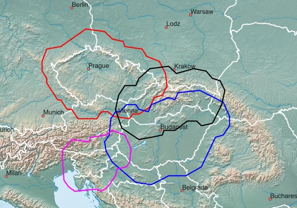

Middle Europe - available Maps:
Tips concerning download:
- click on the Netbook Icon in the PC browser: the map will be downloaded onto your personal computer
- click on the Locus Map Icon in the Android browser: map+design will be downloaded into Locus Map
- click on the OruxMaps Icon in the Android browser: the map will be downloaded into OruxMaps
Western, Eastern, Northern, Southern Germany:

| Western Germany DEU+WEST 745 MB |
| Eastern Germany DEU+OST 345 MB |
| Northern Germany DEU+NORD 419 MB |
| Southern Germany DEU+SUED 533 MB |
Federal States of Germany:
| Baden-Wuerttemberg 153 MB |
|||
| Bavaria 209 MB |
|||
| Berlin 18 MB |
|||
| Brandenburg 61 MB |
|||
| Bremen 6 MB |
|||
| Hamburg 12 MB |
|||
| Hesse 81 MB |
|||
| Mecklenburg-Western Pomerania 34 MB |
|||
| Lower Saxony 118 MB |
|||
| North Rhine-Westphalia 237 MB |
|||
| Rhineland-Palatinate 55 MB |
|||
| Saarland 12 MB |
|||
| Saxony 60 MB |
|||
| Saxony-Anhalt 39 MB |
|||
| Schleswig-Holstein 41 MB |
|||
| Thuringia 40 MB |
Austria, Switzerland, Luxembourg, Croatia:

| Austria AUT+ 490 MB |
| Switzerland CHE+ 383 MB |
| Luxembourg LUX+ 63 MB |
| Croatia HRV+ 146 MB |
Poland, Lithuania, Latvia, Estonia:

| Poland POL+ 492 MB |
| Lithuania LTU+ 73 MB |
| Latvia LVA+ 71 MB |
| Estonia EST+ 74 MB |
Czech Republic, Slovakia, Slovenia, Hungary:

| Czech Republic CZE+ 458 MB |
| Slovakia SVK+ 223 MB |
| Slovenia SVN+ 119 MB |
| Hungary HUN+ 171 MB |